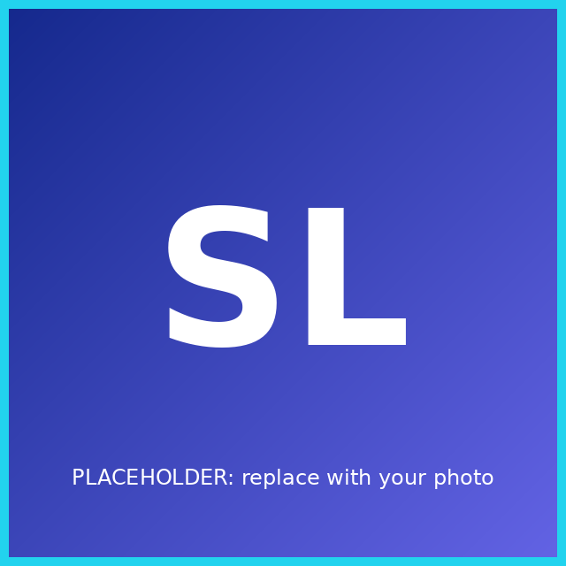

Programming
- C
- C++
- Python
Hi, I'm Saurabh Latta.
Software Developer
Second-year Computer Science Engineering (AI & ML) student at JECRC University, Jaipur. I build practical software, learn by shipping projects and aim to turn ideas into products.

I'm a second-year B.Tech student in Computer Science and Engineering (AI & ML) at JECRC University, Jaipur. I enjoy turning ideas into working applications and I'm steadily building the fundamentals that strong engineers rely on.
My interests include:
The technologies I'm currently learning and working with.
Hover or focus a card for details. Links appear only when a real repository or demo exists.
JECRC University, Jaipur, Rajasthan
Currently in second yearSelect a topic to see how I'm approaching it.
Strengthening core syntax, OOP and problem solving with C++.
Code, experiments and projects live on GitHub as saurabhlatta.
Contribution graph could not load. View it on GitHub.
Add repository links in js/projects.js and they appear automatically on the project cards.